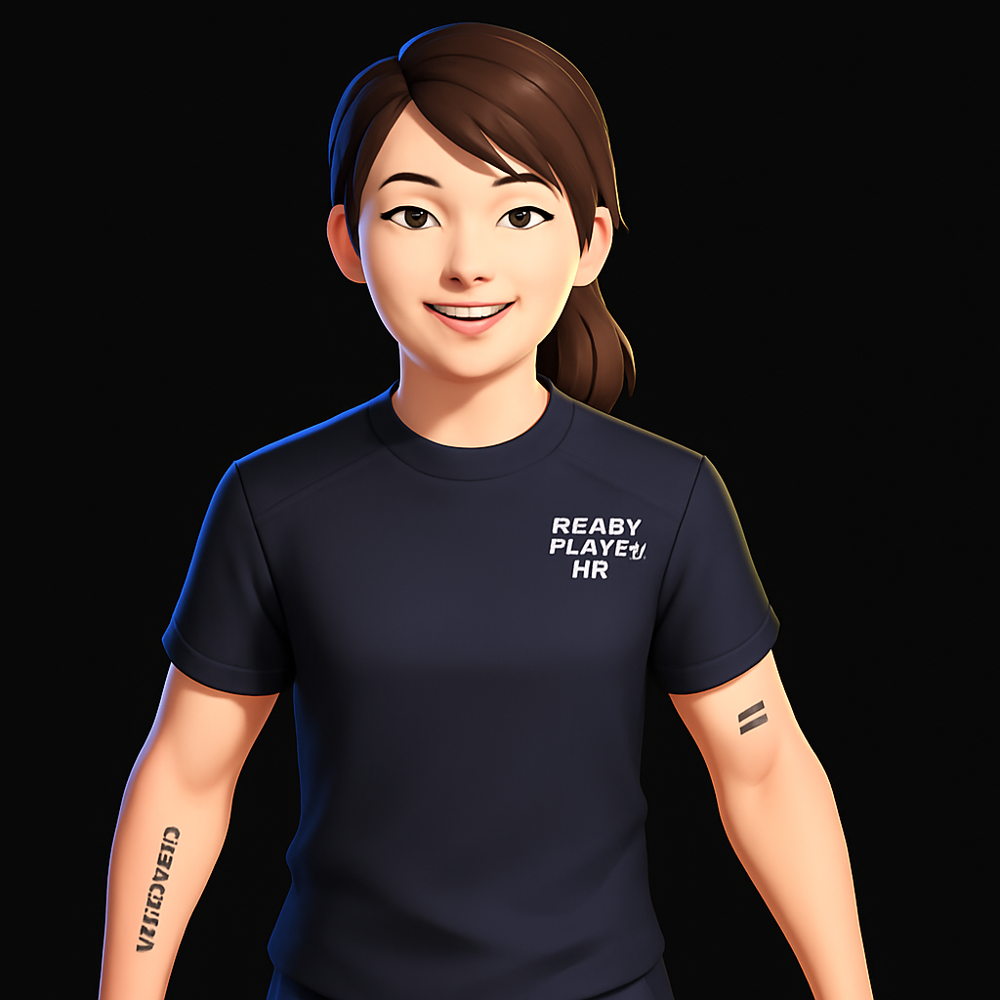

I'm Sneha — an aspiring Data Analyst from Hyderabad (B.Tech — EEE). I build data-driven solutions that combine careful data cleaning, exploratory analysis, feature engineering, and predictive modelling. I enjoy turning messy data into actionable insights
and collaborating with teams to solve real problems.
</AboutMe>
Aspiring Data Analyst with skills in Python, SQL, Power BI, and Machine Learning. Experienced in data cleaning, visualization, and predictive modelling — I turn messy data into actionable insights and deliver reproducible analysis.
Key projects: Customer Churn Prediction (end-to-end ML workflow), Student Performance Prediction (≈85% accuracy), Cricket Player Performance Analysis, Sales Data Dashboard (Power BI), and an Embedded Systems project on Underground Cable Fault Detection.
Technical skills include Python (pandas, numpy, scikit-learn), SQL, Power BI, Tableau, Matplotlib, Seaborn, Jupyter Notebook, GitHub and MS Excel. I combine analytical rigour with clear visual storytelling to support decisions.
Education & certifications: Accredited Data Science & Machine Learning Program — Masai x IIT Guwahati (Jan 2025 – Current). B.Tech (EEE) — MLR Institute of Technology (CGPA: 8.31). Certifications: Google Data Analytics (Coursera), Machine Learning by
Andrew Ng (Coursera), Power BI Workshop, SQL using AI Workshop.
Extracurricular & achievements: Represented JNTU in All India Inter University National Games (Athletics — Triple Jump), organized inter-college sports fest and IoT event, and represented Telangana State in School Games Federation of India (Running).

</Skills>
Tech Stack
HTML
CSS
C++
Power BI
SQL
Machine Learning
CANVA
</Projects>
Customer Churn Prediction
End-to-end ML workflow to predict customer churn: data cleaning, feature engineering, model training and evaluation. Built with Python, pandas and scikit-learn; includes visualizations and recommendations to reduce churn.
Classification model to predict student outcomes (≈85% accuracy). Includes EDA, feature engineering and model evaluation with actionable insights for educators.